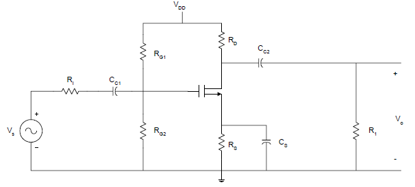
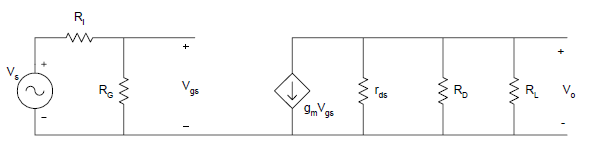
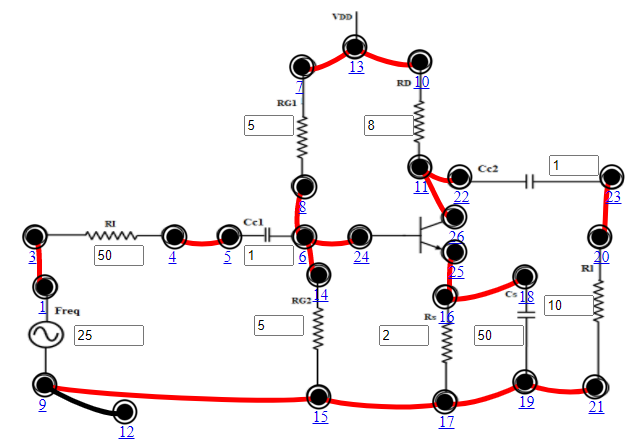

Objective
Objective of Experiment
- To obtain the frequency response of the common source FET Amplifier
- To find the Bandwidth.

Pre Quiz
Test Your Knowledge!!

Theory
Field-effect transistor (FET)
A field-effect transistor (FET) is a type of transistor commonly used for weak-signal amplification (for example, for amplifying wireless (signals). The device can amplify analog or digital signals. It can also switch DC or function as an oscillator. A FET is a three terminal semiconductor device in which current conduction is by one type of carries & is controlled by the effect of electric field. In the FET, current flows along a semiconductor path called the channel. At one end of the channel, there is an electrode called the source. At the other end of the channel, there is an electrode called the drain. The physical diameter of the channel is fixed, but its effective electrical diameter can be varied by the application of a voltage to a control electrode called the gate.
There are two types of FET namely the junction FET (JFET) and the metal-oxide- semiconductor FET (MOSFET).The junction FET has a channel consisting of N-type semiconductor (Nchannel) or P-type semiconductor (P-channel) material; the gate is made of the opposite semiconductor type. In P-type material, electric charges are carried mainly in the form of electron deficiencies called holes. In N-type material, the charge carriers are primarily electrons. A N-channel JFET has a N-type semiconductor bar, the two ends of which make the Drain & source terminal. On the two sides of this bar, P-N junction is made. This P region makes gate. Usually, these two gates are connected together to form a single gate. The gate is given a –ve bias w.r.t source. The Drain is given +ve potential w.r.t source.
Common Source Amplifier
The Common Source Amplifier is one of the three basic FET transistor amplifier configurations. In comparison to the BJT common-emitter amplifier, the FET amplifier has much higher input impedance, but a lower voltage gain. The Junction Field Effect Transistor (JFET) offers very high input impedance along with very low noise figures. It is very suitable for extremely low-level audio applications as in audio preamplifiers. The JFET is more expensive than conventional bipolar transistors but offers superior overall performance. Unlike bipolar transistors, current can flow through the drain and source in any direction equally. Often the drain and source can be reversed in a circuit with almost no effect on circuit operation.
The bias levels in amplifiers based on BJTs are often stabilized using the emitter degeneration technique; that is, a resistor is placed between the transistor‟s emitter and ground. The resistor creates negative feedback, which forces the quiescent collector current to remain at its design value regardless of changes in the transistor‟s parameters (such as βF). A similar technique can be used to stabilize the biasing of FET amplifiers.
Frequency response of Common Source Amplifier
A common-source JFET amplifier in which a resistor \(R_S\) has been added between the source and ground. In this circuit the gate has been connected to ground through the resistor \(R_G\); thus, the gate is held at ground potential (0 V). If the drain current \(I_D\) begins to rise above its intended quiescent value, the voltage drop across \(R_S\) will increase. Since the gate-source voltage \(V_{GS}\) is the difference between the gate potential (fixed at 0 V) and the voltage across RS, a rise in the voltage across \(R_S\) will cause \(V_{GS}\) to drop, lowering \(I_D\) back to its original value. The opposite chain of events occurs if \(I_D\) begins to drop below its design value. It is a common practice in the design of circuits based on JFETs to tie the gate to ground potential via a large-valued resistor (typically around 1MΩ). The circuit for the common source amplifier is shown in figure 1.
Figure 1
The external capacitors \(C_{C1}\) \(C_{C2}\) , and \(C_S\) will influence the low frequency
response. The internal capacitances of the FET will affect the high frequency
response of the amplifier.
The midband gain, \(A_m\) , is obtained from the midband equivalent circuit of the
common-source amplifier. This is shown in Figure 2. The equivalent circuit is obtained by short-circuiting all the external capacitors and opencircuiting
all the internal capacitances of the FET.
Figure 2
Using voltage division
$$V_{gs} =\frac{R_G}{R_G + R_I} \times V_s$$
From Ohm’s Law,
$$V_o=-g_m \times V_{gs} (r_{ds} || R_L || R_D) $$
Output is taken at drain and gain is calculated by using the expression, \(A_v=\frac{V_0}{V_s}\)
$$ A_v=\frac{V_0}{V_s}=-g_m \times \frac{R_G}{R_G + R_I} (r_{ds} || R_L || R_D)$$ Voltage gain in dB is calculated by using the expression, \(A_v=20log\frac{V_0}{V_s}\)
It can be shown that the low frequency poles due to \(C_{C1}\) and \(C_{C2}\) can be written as $$ τ_1=\frac{1}{w_{L1}}=C_{C1} \times (R_G+R_{I}) $$ $$ τ_2=\frac{1}{w_{L2}}=C_{C2} \times [R_{L}+(R_D || r_{ds})] $$ Assuming rd is very large, the pole due to the bypass capacitance CS can be shown to be $$ τ_3=\frac{1}{w_{L3}}=C_S \times \frac{R_S}{1+g_m R_S} $$ and the zero of \(C_S\) is $$ w_Z=\frac{1}{R_S \times C_S} $$ The 3-dB frequency at the low frequency can be approximated as $$ w_L≅\sqrt(w_{L1})^2+(w_{L2})^2+(w_{L3})^2 $$ For a single stage common-source amplifier, the source bypass capacitor is usually the determining factor in establishing the low 3-dB frequency. The high frequency poles are $$ w_{H1}=\frac{1}{C_1 (R_G || R_I)} $$ $$ w_{H2}=\frac{1}{C_2 (R_D || R_D || r_{ds})} $$ where, \(C_1= C_{gs} +C_{gd}(1+g_mR_L)\) and \(C_2=C_{ds}+C_{gd}\)
The approximate high frequency cut-off is $$wH= \frac{1}{\sqrt(\frac{1}{w_{H1}})^2+(\frac{1}{w_{H2}})^2} $$
A field-effect transistor (FET) is a type of transistor commonly used for weak-signal amplification (for example, for amplifying wireless (signals). The device can amplify analog or digital signals. It can also switch DC or function as an oscillator. A FET is a three terminal semiconductor device in which current conduction is by one type of carries & is controlled by the effect of electric field. In the FET, current flows along a semiconductor path called the channel. At one end of the channel, there is an electrode called the source. At the other end of the channel, there is an electrode called the drain. The physical diameter of the channel is fixed, but its effective electrical diameter can be varied by the application of a voltage to a control electrode called the gate.
There are two types of FET namely the junction FET (JFET) and the metal-oxide- semiconductor FET (MOSFET).The junction FET has a channel consisting of N-type semiconductor (Nchannel) or P-type semiconductor (P-channel) material; the gate is made of the opposite semiconductor type. In P-type material, electric charges are carried mainly in the form of electron deficiencies called holes. In N-type material, the charge carriers are primarily electrons. A N-channel JFET has a N-type semiconductor bar, the two ends of which make the Drain & source terminal. On the two sides of this bar, P-N junction is made. This P region makes gate. Usually, these two gates are connected together to form a single gate. The gate is given a –ve bias w.r.t source. The Drain is given +ve potential w.r.t source.
Common Source Amplifier
The Common Source Amplifier is one of the three basic FET transistor amplifier configurations. In comparison to the BJT common-emitter amplifier, the FET amplifier has much higher input impedance, but a lower voltage gain. The Junction Field Effect Transistor (JFET) offers very high input impedance along with very low noise figures. It is very suitable for extremely low-level audio applications as in audio preamplifiers. The JFET is more expensive than conventional bipolar transistors but offers superior overall performance. Unlike bipolar transistors, current can flow through the drain and source in any direction equally. Often the drain and source can be reversed in a circuit with almost no effect on circuit operation.
The bias levels in amplifiers based on BJTs are often stabilized using the emitter degeneration technique; that is, a resistor is placed between the transistor‟s emitter and ground. The resistor creates negative feedback, which forces the quiescent collector current to remain at its design value regardless of changes in the transistor‟s parameters (such as βF). A similar technique can be used to stabilize the biasing of FET amplifiers.
Frequency response of Common Source Amplifier
A common-source JFET amplifier in which a resistor \(R_S\) has been added between the source and ground. In this circuit the gate has been connected to ground through the resistor \(R_G\); thus, the gate is held at ground potential (0 V). If the drain current \(I_D\) begins to rise above its intended quiescent value, the voltage drop across \(R_S\) will increase. Since the gate-source voltage \(V_{GS}\) is the difference between the gate potential (fixed at 0 V) and the voltage across RS, a rise in the voltage across \(R_S\) will cause \(V_{GS}\) to drop, lowering \(I_D\) back to its original value. The opposite chain of events occurs if \(I_D\) begins to drop below its design value. It is a common practice in the design of circuits based on JFETs to tie the gate to ground potential via a large-valued resistor (typically around 1MΩ). The circuit for the common source amplifier is shown in figure 1.

Figure 1

Figure 2
Output is taken at drain and gain is calculated by using the expression, \(A_v=\frac{V_0}{V_s}\)
$$ A_v=\frac{V_0}{V_s}=-g_m \times \frac{R_G}{R_G + R_I} (r_{ds} || R_L || R_D)$$ Voltage gain in dB is calculated by using the expression, \(A_v=20log\frac{V_0}{V_s}\)
It can be shown that the low frequency poles due to \(C_{C1}\) and \(C_{C2}\) can be written as $$ τ_1=\frac{1}{w_{L1}}=C_{C1} \times (R_G+R_{I}) $$ $$ τ_2=\frac{1}{w_{L2}}=C_{C2} \times [R_{L}+(R_D || r_{ds})] $$ Assuming rd is very large, the pole due to the bypass capacitance CS can be shown to be $$ τ_3=\frac{1}{w_{L3}}=C_S \times \frac{R_S}{1+g_m R_S} $$ and the zero of \(C_S\) is $$ w_Z=\frac{1}{R_S \times C_S} $$ The 3-dB frequency at the low frequency can be approximated as $$ w_L≅\sqrt(w_{L1})^2+(w_{L2})^2+(w_{L3})^2 $$ For a single stage common-source amplifier, the source bypass capacitor is usually the determining factor in establishing the low 3-dB frequency. The high frequency poles are $$ w_{H1}=\frac{1}{C_1 (R_G || R_I)} $$ $$ w_{H2}=\frac{1}{C_2 (R_D || R_D || r_{ds})} $$ where, \(C_1= C_{gs} +C_{gd}(1+g_mR_L)\) and \(C_2=C_{ds}+C_{gd}\)
The approximate high frequency cut-off is $$wH= \frac{1}{\sqrt(\frac{1}{w_{H1}})^2+(\frac{1}{w_{H2}})^2} $$

Procedure
- Connect the components as mentioned below:
L1-L3, L4-L5, L6-L8, L6-L14, L6-L24, L7-L13, L9-L15, L10-L13, L11-L22, L15-L17, L16-L25, L17-L19, L18-L16, L19-L21, L20-L23, L26-L11, L12-L9.(For eg. click on 1 and then drag to 3 and so on.) - Click on 'Check Connection' button to check the connections.
- If connected wrong, double click on the wrong connection. Else click on 'Delete all connection' button to erase all the connections.
- The Input voltage (Vin) is set to 50mV at 1 KHz frequency.
- Keeping source voltage constant, vary the frequency from 50 Hz in regular steps.
- Set Input Resistance (RI)=50Ω.
- Set Drain Resistance (RD)=8 kΩ, Set Source Resistance (RS)=2 kΩ, Set Load Resistance (RL)=10 kΩ.
- Set Gate Resistance1 (RG1)=5 MΩ, Set Gate Resistance2 (RG2)=5 MΩ.
- Set Coupling Capacitor1(CC1)=1 μF, Set Coupling Capacitor2 (CC2) =1 μF, Set Bypass Capacitance (CS)=50μF.
- Click on "Add to Table" button to add the readings to the table.
- Vary the Frequency by keeping the resistances constant.
- Click on "Plot" button to plot the Magnitude graph of the CS Amplifier, Frequency(Hz) along X-axis and Magnitude(dB) along Y-axis.
- Click on "Clear" button to take another set of readings.

Figure:1

Simulator

Post Quiz
Test Your Knowledge!!

Reference
- Boylestad / Nashelsky, Electronic Devices and Circuit Theory , Pearson Education India; 11 edition (2015)
- Adel S. Sedra , Kenneth C. Smith , Arun N. Chandorkar , Microelectronic Circuits: Theory And Applications,Oxford University Press ,Seventh Edition, (1 June 2017)
- Donald Neamen, Electronic Circuits: Analysis and Design, McGraw Hill Education; 3 edition (25 August 2006)
- Jacob Millman , Christos Halkias , Chetan Parikh , Millman's Integrated Electronics, McGraw Hill Education; 2 edition (1 July 2017)
- B.G. Streetman and S. Banerjee, Solid State Electronic Devices, Prentice Hall.